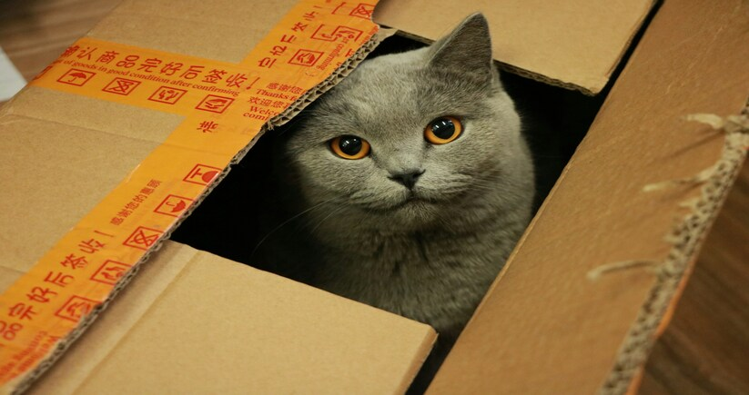

@@include('header.htm')

@@include('blocks/navigation.htm', {"blogs": "active", "blogDetails": "active"})

@@include('blocks/page-title.htm',{"title" : "Blog Details"})

<!-- Contact Section -->
<section class="blog-section section style-four style-five">
  <div class="container">
    <div class="row d-flex justify-content-center">
      <div class="col-lg-9">
        <div class="left-side">
          <div class="item-holder">
            <div class="image-box">
              <figure>
                <a href="single-blog.html"
                  ></a>
              </figure>
            </div>
            <div class="content-text">
              <h4>Curiosity Killed the Cat – But What Killed your Curiosity?</h4>
              <span>By AJ Keller on August 18, 2023</span>
              <p>
                Children possess an insatiable curiosity, perpetually asking the question "Why?" as they enthusiastically explore the world around them, driven simply by their desire to understand. However, as adults, we often find ourselves fixed in established and convenient cognitive routines. This raises the question: what causes this shift, and can we ever rekindle our curiosity, even in adulthood?
              </p>
              <div class="text">
               <p>When NASA wanted to recruit profoundly imaginative individuals, they enlisted the expertise of Dr. George Land to develop an assessment capable of precisely assessing creative aptitude. 

                Working in partnership with fellow researcher Dr. Beth Jarman, they formulated a test focused on assessing divergent thinking – the capacity to approach a given problem and generate numerous solutions.
                
                The test proved effective and remains a foundational component of curiosity-related research. However, driven by his own curiosity, Dr. George Land desired to delve deeper into the underlying mechanisms of curiosity.
                
                Where does this trait originate, and how does it transform as we progress through life? He wondered.
                
                To tackle these queries, he led an extensive observational study involving 1,600 children. He administered the test to these kids at the ages of 5, 10, and 15. The initial test showed that an impressive 98% achieved the highest possible score in creativity. Yet, when they retook the test five years later, only 30% of the very same children performed well. Even more dishearteningly, during the third instance, now in high school, only a mere 12% of the children demonstrated proficiency in the test.</p>
              </div>
              <div class="text">
                <p>
                  As for adults, the situation shows no improvement. Drawing from a sample of 280,000 individuals, fewer than 2% of all adults are labeled as creative based on their responses to this standardized test.

                  In fact, there is some evidence to suggest that this dramatic decline in our curiosity levels could be caused by our increase in knowledge growing up.

                  I mean let’s face it…

                  Nobody is born a “boring grown up”. We don’t exit the womb excited about a 401K and a new dishwasher.

                  But somewhere along the line, life happens.

                  Once we feel like there’s no gap anymore between what we already know and what we wish to know – it seems that we just cease to be curious. 
                </p>
              </div>
              <div class="text">
                <p>
                  But why should we care about this waning curiosity?

                  It keeps you young: Research suggests that maintaining a sense of wonder throughout life, coupled with a penchant for seeking novelty, contributes to slower aging. A study that monitored aging individuals and their curiosity levels revealed that those with high levels of curiosity were more likely to survive five years later!

                  It enhances learning: There is strong evidence to suggest that curiosity significantly improves the retention of new information. After all, the more curious you are about a subject, the greater the likelihood of remembering it…

                  It nurtures your strongest relationships: When you show genuine interest in others, it has a profound impact on building robust relationships, as evidenced by research. This curious approach leads to deeper intimacy and lays the groundwork for meaningful, lasting connections.

                  Are you convinced you should do more to cultivate your curiosity? 
                </p>
              </div>
            </div>
          </div>
        </div>
      </div>
    </div>
  </div>
</section>
<!-- End Contact Section -->

@@include('blocks/footer.htm') @@include('footer.htm')
